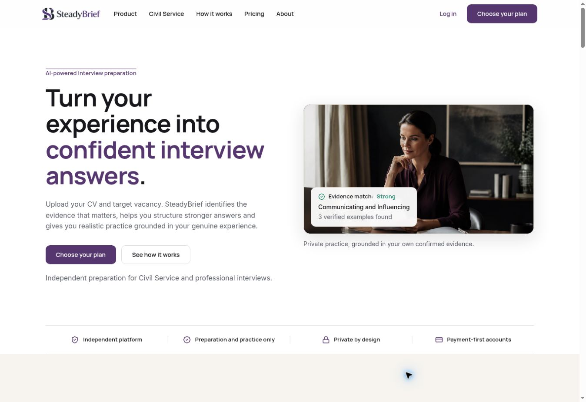
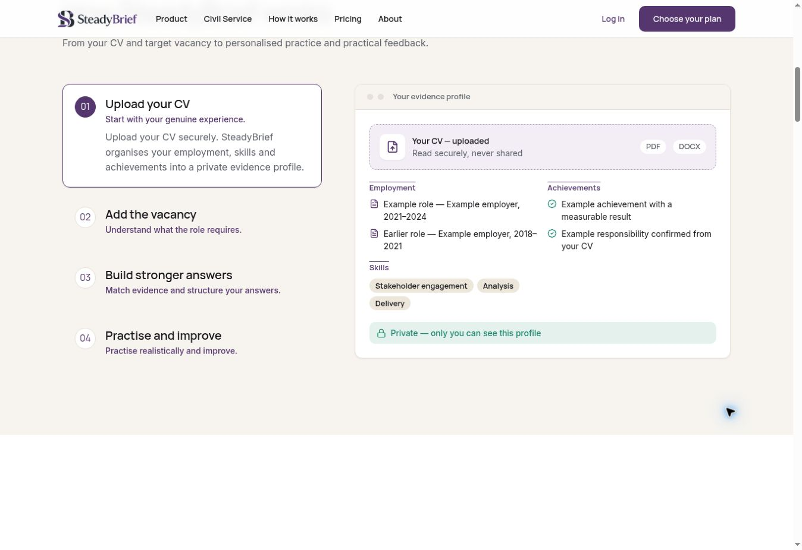
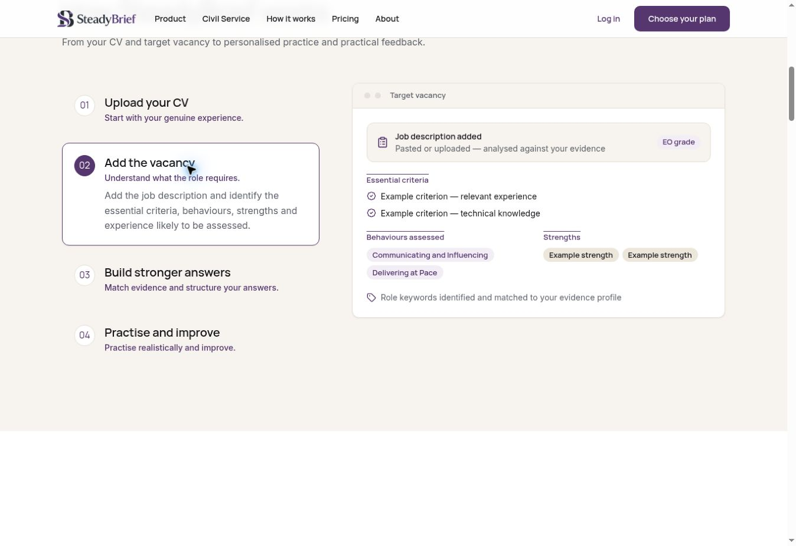
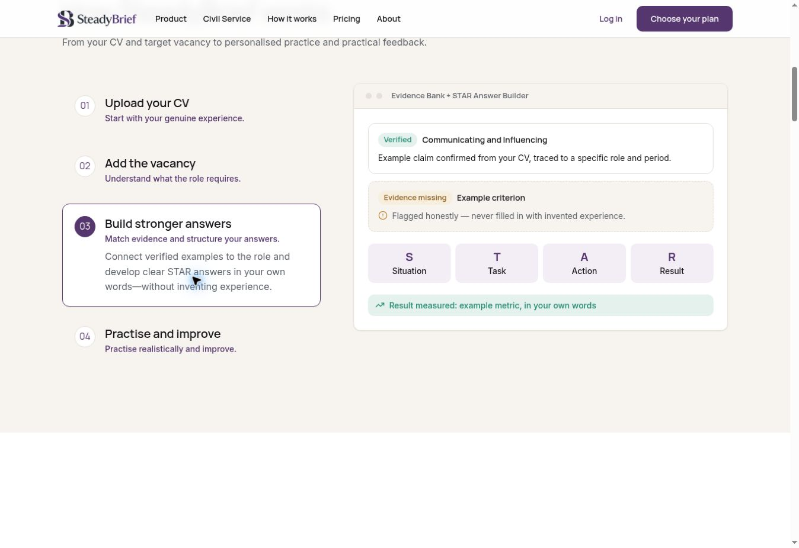
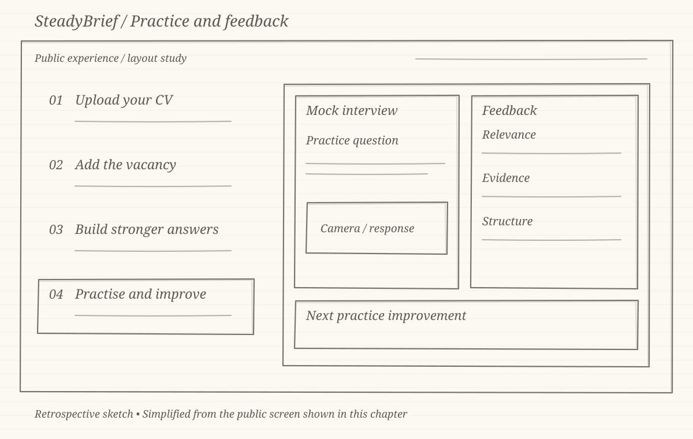
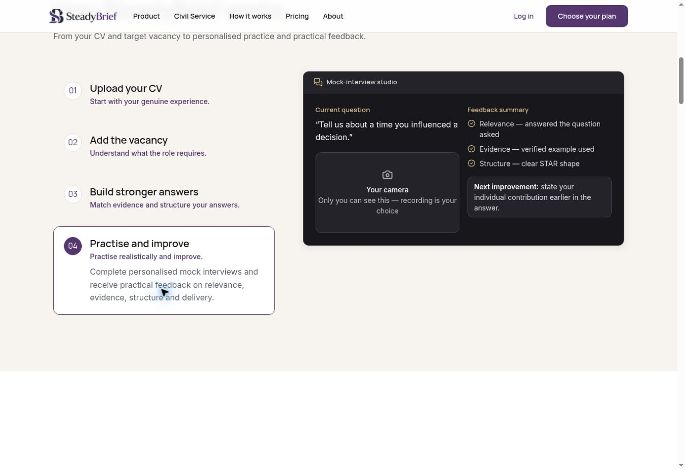

CASE STUDY 01 · INTERVIEW PREPARATION
SteadyBrief interview preparation
Connecting a candidate’s experience and target vacancy to a clearer preparation journey. My role brought together product requirements, UX direction and release validation.
Visit SteadyBriefTHE LIVE PUBLIC WEBSITE

01 / THE CHALLENGE
Preparation needs a starting point.
Interview preparation can become a collection of generic questions, disconnected from the candidate’s career and the role they want. SteadyBrief centres the journey on two things the candidate already has: their CV and the target vacancy.
The product needed to connect those inputs to understandable next steps. My focus was defining the journeys, directing the UX and making requirements clear enough for developers to implement and for UAT to assess.
- Product
- CV and vacancy journeys, onboarding and access requirements.
- Design
- User journeys, interface direction and developer collaboration.
- Delivery
- Acceptance criteria, QA and UAT coordination.
02 / THE JOURNEY
Make the sequence understandable.
Experience comes first, followed by vacancy context, answer structure and practice. The chapters below pair a retrospective layout sketch with the matching public demonstration at each step.
The sketches explain the current public journey. They are portfolio illustrations, not original discovery artefacts.


03 / EXPERIENCE FIRST
Start with what the candidate can evidence.
The public walkthrough introduces a CV-based evidence profile before the vacancy or answer-building steps. Employment, skills and achievements are grouped separately, making the role of the source document visible.
For product definition, this is a useful boundary: preparation should begin with the candidate’s experience, while missing information remains something to clarify.


04 / ROLE CONTEXT
Keep the vacancy alongside the experience.
The next step introduces the target job description and separates essential criteria, assessed behaviours and strengths. This gives the candidate a clearer view of what the preparation is working towards.
The design question is how to connect those requirements to the CV without making a match look like a guaranteed interview outcome. Clear labels and a visible sequence help explain that relationship.


05 / ANSWER STRUCTURE
Distinguish evidence from gaps.
The answer-building example places confirmed evidence and missing evidence side by side. It then introduces the Situation, Task, Action and Result structure as four distinct parts.
This makes two responsibilities visible: the product helps organise an answer, while the candidate supplies and confirms the experience behind it. The example communicates the intended approach without presenting suggested details as established facts.


06 / PRACTICE
Give feedback a next step.
The final walkthrough step connects a mock-interview question to feedback on relevance, evidence and structure. It includes a specific improvement to make during the next practice session.
The useful design principle is to make feedback actionable. A candidate needs to understand what to work on next, rather than treating a preparation summary as a prediction of success.
07 / DELIVERY AND LEARNING
A journey that can be checked and refined.
My contribution covered product definition, UX direction and release validation. The work connected onboarding, CV and vacancy journeys, access requirements and acceptance criteria so the team could discuss delivery in terms of complete user flows.
The current public experience gives the product a visible sequence: add experience, define the role, structure answers and practise. The next step for this case study is to document the signed-in workflow with permissioned test-account screenshots and specific release evidence.
The screenshots here are genuine captures of SteadyBrief’s public website. The interactive panels contain illustrative sample content. They do not establish the behaviour of the signed-in application, and no conversion or interview-success figures are claimed.
More from my portfolio
LET’S CONNECT
Have a product challenge?
I’m happy to discuss product management, UX/UI and digital delivery.
t02ft22@gmail.com